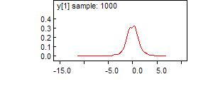
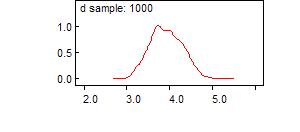
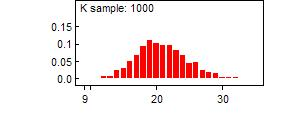
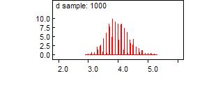

![[bugsicon]](bugsicon.jpg) t-df: learning about the degrees of freedom of
t-df: learning about the degrees of freedom of
a t distribution
This example uses simulated data: we generate n = 1000 observations from a (standard) t distribution with
d
degrees of freedom:
model {
d <- 4
for (i in 1 : 1000) {
y[i] ~ dt(0, 1, d)
}
}
We let the sampler run for a while (just to check that we're simulating from the correct distribution) and then we save a set of simulated data using the 'save state' facility (select
Save State
from the
Model
menu).
Check: should have mean 0, variance 2, etc.

node mean sd MC error 2.5% median 97.5% start sample
y[1] -0.03787 1.452 0.04852 -3.141 -0.003657 2.847 1 1000
To analyse the simulated data: first we try a model for learning about the degrees of freedom as a continuous quantity:
model {
for (i in 1:1000) {
y[i] ~ dt(0, 1, d)
}
d ~ dunif(2, 100) # degrees of freedom must be at least two
}
![[t-df2]](t-df2.jpg)

node mean sd MC error 2.5% median 97.5% start sample
d 3.929 0.3753 0.03154 3.231 3.913 4.67 1001 1000
Now we attempt to model the degrees of freedom parameter with a discrete uniform prior on {2, 3, 4, ..., 50}. The sampler soon converges to
d
= 4 but refuses to move away from there, presumably because the data provide overwhelming evidence for
d
= 4 compared to the alternatives, e.g.
d
= 3 or 5.
model {
for (j in 1:49) {
p[j] <- 1 / 49
d.value[j] <- j + 1
}
for (i in 1:1000) {
y[i] ~ dt(0, 1, d)
}
K ~ dcat(p[])
d <- d.value[K]
}
Initial values:
list(K = 6)
We should get better mixing if we specify the prior for
d
on a finer grid, e.g. {2.0, 2.1, 2.2, ..., 6.0}:
Model:
model {
for (j in 1:41) {
p[j] <- 1 / 41
d.value[j] <- 2 + (j - 1) * 0.1
}
for (i in 1:1000) {
y[i] ~ dt(0, 1, d)
}
K ~ dcat(p[])
d <- d.value[K]
}
Initial values:
list(K = 30)

node mean sd MC error 2.5% median 97.5% start sample
d 3.98 0.385 0.03401 3.3 4.0 4.8 101 1000
Simulated data:
list(
y = c(
-0.5908915371078728,-2.007313444357929,0.4060010876914352,0.1648100356239965,-0.07544204322866895,
0.1934513562550115,-1.99216017641294,0.4605267743363478,2.870841134012401,0.4697027015715531,
1.075137749844306,-1.86057298660303,0.6696277496598672,-3.751135618205416,0.2954899608859383,
0.2455600714107795,1.145697069057127,0.5001028365348743,0.1970020283749174,0.9000658663833929,
0.5723779714915089,2.036567915247737,-0.9372064194922384,0.1973300460117617,0.1715791912197212,
0.1126875626150415,1.491852710280691,0.7068716354069262,-0.4876297021424343,-0.0536145493828535,
0.4700698221021472,-0.9238551233580118,-0.5777029166664041,-0.6434176861324005,1.532738488794558,
-0.1285683418525271,-1.379104545200595,1.354644422195987,-0.1049792354460157,1.616027862582396,
-0.1364519926860024,1.418692368505899,0.6342287418556558,0.1487959725735537,0.1787059069595915,
-0.2589127709744145,-1.942429539298654,-0.0286419932357626,-0.7578134173841942,1.337250826451596,
0.7879484183635691,-0.1432808925923518,-4.775041061616348,-0.09596075317562262,1.421300861716724,
0.8433708037565218,1.03991015037578,-0.1174804434873528,1.437113441116121,-0.42523578242742,
0.1597951389669211,-1.38167185847096,0.7193296781358086,0.4396257107995891,-1.079167092565598,
-5.07200411255616,3.089567599151719,0.3841675686413476,-0.3558439646711244,-0.2457967499439482,
-0.484937112588883,1.048567214479944,1.721752563579246,0.8039140459565108,-1.292845672928827,
-0.3593311835880041,2.430505025600582,-0.1070435185273765,0.1556696279667897,-0.1808245093699921,
0.7082566528470359,-0.3525902482221622,-1.95982416808056,-2.086032952168416,-1.677796761432561,
-0.3286068691670814,-0.2120341751502605,-0.554058020338225,-2.366236855646436,0.8172284047296806,
-0.6244064069367521,-1.42509687271687,0.8419259800570151,-0.8145317783548514,-0.7301286784528697,
0.4813389249582249,-0.6212446888761043,-0.4995379450703264,-2.834388843146803,1.059780456941898,
0.3908660486517302,1.0373716732504,1.711049901386849,0.008289654504406113,0.5126154117289999,
-0.7938854694392311,1.568233309187323,-1.618552766620782,-3.685488431458005,1.938778450488219,
0.9231309124187371,0.6217797081320616,-0.4583581415118592,-1.45492052377827,-0.942527703607691,
0.1826376793443961,-0.6211156729709173,-2.331424185997161,-1.25843062697225,0.7107021217305527,
-1.327530162942034,-1.125010628638974,-0.4896857474418785,-0.5569999920499101,-2.249028064491922,
-0.2596546726741842,-0.1345870785475433,0.1467174002128458,1.403030355039033,0.6363750259429125,
0.662507587776226,0.1787922775733713,-0.9446101379851654,-0.004261351555559072,-0.6856580164454815,
-0.4487800591128367,-1.396618199578357,0.3402632420607455,-0.4605937985688377,-3.035283201565958,
-0.6158872097260348,-0.3338259177639293,-0.1890431784148303,0.8447513302451778,1.565529461692188,
-2.415391819056347,-1.659467251213354,-1.567270856329057,-0.1735692525781531,-0.1956127633150493,
0.1961162641335729,-0.1873169437138367,3.144041662168259,-0.2470967508556323,-1.016244490822158,
-0.2565396219802384,-0.6486868721366633,-1.876769915844309,-0.02614184564036121,-0.6208734566160958,
-0.7605783491802096,0.2007167658778659,0.7066842336515038,0.4639748579119211,-1.938601041106199,
-0.6772439327106606,2.640626708324858,-0.4466993507893812,-0.07599746944107233,-0.2593819762836652,
1.285554313454232,1.022652646070523,-0.3634299208626184,0.8828699234509265,-0.6294283191200086,
-0.8781172316072966,-0.6645938860908153,-0.476021915915726,-0.2932801287809975,0.1468724493196026,
0.6432901964503178,-0.5065363036394305,-1.922489570051343,4.874866914015601,1.239339436318624,
-1.317483660615615,0.3745603980761597,-0.1104864974257309,0.09618301955176772,0.310950959298233,
-1.709305265089853,-1.068649714148405,1.804917965480577,-0.2283412123659392,0.3106970274746861,
0.7900802244627948,-0.556869006475016,-0.714243644917149,0.1285594995952644,-0.01014966157600336,
-0.8106135322290308,0.7893041351090616,1.175010012002019,1.404754885889042,-0.3119863689096689,
-0.405467891256126,2.82983003616527,0.04213911161664857,0.1216719321364207,-0.4307429781823221,
-0.2071549092124086,-0.175739283378274,-1.424788757374941,0.4925541921402429,0.4951599877014765,
-0.0798806807897527,-1.081986018262034,1.912483774289437,1.263726578212491,-1.03722121771122,
-0.6410088803358858,-1.149840565705541,-1.707682266696138,0.1050461705169006,0.2998933011332963,
-0.4791606190189653,-2.090037429737277,0.5728422212025412,-0.03305110224892818,1.857555999042362,
-0.38917299987947,-1.184564829622449,0.118461717784928,0.3070755456193256,2.082400918644998,
0.1655338103985241,1.284955937628166,-1.32606014592273,-1.403985724730786,3.297636858718299,
-4.211789968614927,0.346522732769389,-0.1125870897366299,2.036356794357336,0.4561760350991223,
1.248124762264478,-0.1249200303478411,0.5811068098172595,0.3679348089051374,1.190785061877388,
-4.802341728495059,-1.258177873735794,0.2018793797861565,-1.483492952796597,-0.00145585083287235,
0.6047573603866734,-1.880305946680845,-1.425703150365933,0.0817527226297439,-0.01288662174935291,
1.079076124110419,2.573405718834488,0.4099346022666733,-0.304569203988935,-1.873286802449914,
2.077488825042535,0.3706013510523907,0.9781959363360289,-0.5944965136264159,0.01426692486822407,
-0.4163080716279858,1.013190871840044,-0.1284671784690418,-0.7643958388382597,-0.8840279838239876,
-0.3724641754410042,1.248399380560399,0.8255226218211371,1.394040221244581,-0.3328379805637126,
0.7459873294877282,0.9525802923498571,2.261254900899029,2.57137737079096,0.1521879068113788,
-0.1306481041358813,-4.455705415528128,-0.2530805384782387,-0.9461865454117783,-0.4361206281194895,
1.173360740679734,0.498735754434825,2.125648197267124,0.5906571404315876,-0.3064037298509222,
-0.2396933875268085,0.1277116824736455,0.9632995854267632,-0.3863765394647463,1.602688073269749,
-0.9239489436793333,-0.5010764821107386,-1.785947692067786,-2.551876754735112,-0.4608977202650056,
-0.02312227704110253,-0.6944221873196328,0.3541441617411004,-0.1794347112011647,0.3279669754560561,
0.6274160237416009,2.109777017682354,0.05453345264687576,2.844717243740532,-0.3244894521103837,
0.1448640887944176,-0.2218122779441233,-0.7542405647146255,1.256073943535875,-0.7828395944982899,
0.1344480634071562,0.1089909212381976,-0.1637046787621863,-0.9629911702285778,1.413271830516812,
-1.383862279793753,-0.1303706179076745,0.6486737564196879,0.1530853479565105,0.1101329184415593,
-7.692569663398905,0.2413708846268461,-0.7205385375108301,2.487237834645512,-0.2873057587357477,
-1.563723911117773,0.5946148997935145,0.2454227154819353,0.9614289983489563,-0.5879873428746617,
0.5969016074032424,-0.7430562901809242,1.408938708270236,-0.4116926856356188,0.9987010156522582,
0.4771787293083182,0.270158532457208,-1.182791509566454,0.4045047134058848,0.2332103349918095,
-1.131151404212044,-0.4218875635269697,1.014304277092065,-0.1438378075569806,-1.001386542096513,
-0.08092648363338921,0.3908767269794706,2.124275849297738,-1.608251465301088,-1.81612807931819,
0.9196798483149123,1.382230221171517,-1.063270982483269,-1.622719498134263,0.2962231535083522,
0.5577192136425422,1.454068835897869,-0.4144888807723925,-0.4021825176650635,0.193727765272111,
-3.012016538863628,-0.6424694277122681,-0.488152646680639,-0.8922757482137409,-3.063109208760662,
1.586709094360696,-0.8638743941568585,-1.222007646716083,-0.8066307869560334,0.1851204521345301,
0.329954389579061,1.159587444157836,-1.871220770360775,0.5503588536438024,-0.5465489720060086,
-1.649218119140061,-0.4516633545263464,-0.1253981119311163,0.09877854960359685,-1.032711343758667,
-1.330714524269181,-0.8946055661563341,0.4442740007227003,-0.1796608852483763,0.228967134839228,
0.420628633553996,-0.1455285278813477,-1.412335020507063,-0.07346155470151065,0.215720763483532,
-0.5785133205752545,-0.03364314407579182,0.5004421006988452,-3.830498308249529,-0.07956792225229675,
1.865478332732548,-0.9704352202233437,0.814890387788191,0.1092114374398601,-1.083744129583412,
0.04297178859108285,0.05514334485219084,0.9970695176465197,-2.086556445281441,-0.01989145482727379,
-0.03534114289380445,-1.492899542531751,1.097099584642563,0.5811668626757225,-0.4206807629041246,
0.146750201469827,-1.809550991024262,0.8451826615064972,-0.6247634016938259,0.796435497272129,
0.1489112558824947,0.5894934929940652,1.345723631132977,-0.7180197621628464,-2.853247962982495,
1.899363372881694,-0.9892155884848701,-0.001386002160636697,-1.648324407332626,-2.015431632897574,
1.365898308382686,0.1253578056695474,-0.6142987382655338,-4.032503194192079,0.4284359117922947,
0.3604540525316804,4.507487635121763,-1.15555913799775,2.97768959936873,2.505970699619629,
-1.183186727899605,3.694706129609439,1.051480215519439,2.037947495898892,-0.2311341164410771,
-0.7689261610250149,-0.7958827171553854,0.6907831780204554,3.952173098358438,-0.08032655163210153,
-1.431531066784135,1.007937051198939,-0.1316670113535728,0.5169626633996439,0.5847108981206284,
-1.686147571862827,-1.813372062469873,0.2367398674378886,1.089680588672506,-0.4772525149869641,
0.002079900529154608,-2.691806153212404,-0.6392949347138691,-0.6711881400670949,0.02346301415633211,
-1.102853040472331,-2.67619452261086,1.257977115068027,0.3992470644960178,1.665293810650254,
-0.07222613504019519,-0.2915211062010942,0.1339675592609761,2.653211216980499,2.697423933130467,
-0.7305037134104282,2.417593319757245,-1.264031488965494,-0.07075518103206969,1.432509471524988,
-0.2235212643499426,-0.6722519662149613,-2.64840669471279,-0.5928497672092908,-1.477158432940189,
-1.982029041753225,-0.4012410229989309,0.09133706077807612,-0.1896936441644907,1.221888590100105,
0.7116090560849792,0.4063189925582599,0.3355847130337496,-0.5397934096283282,-0.6569343800936028,
0.003730259270980795,-1.405700561176985,0.1769332301064645,-1.092953619658803,-0.3405493172634633,
0.3744088968861631,-0.05988626821319403,3.030266024871473,-2.53123924293317,0.8390982616039511,
-1.814207769814032,-1.253632296311084,-0.8450365859454775,1.332585528351075,-0.2541434923949448,
2.110671257196705,5.218775223355667,1.508884085842338,-1.215278156348026,-0.6230568995958342,
-1.1185484058935,0.08154929556224866,1.005464183686156,-1.107381787795322,0.6063416949367435,
-1.830405872894503,-0.137000628438533,2.101614035703833,-1.336374249882494,-0.402219477008518,
-0.6835777229842683,-0.496464795735336,-0.02815558292137014,2.355820940801785,0.6348905519494015,
2.026056161384404,-0.06190233082392377,2.399824045124762,1.171051432797569,-1.688996719443934,
0.1384605257052556,1.242779547098202,1.353890596781823,1.247911044801685,-0.6095498950028462,
1.068859138186772,0.005858888885274147,0.370928235209532,2.269965288014558,0.6607422685983838,
-4.340493159579456,-0.2938009056291478,-0.4981340009804311,0.7705921884918713,0.7138948908453234,
0.1894499547512968,0.4840122725042758,1.943981060679825,0.2915808575890365,0.2182084664397969,
0.2950406882647477,-1.358619479997994,0.902827685310026,0.3315192024593002,-1.179034226998379,
0.922964727894984,-0.1405364410371734,-0.8167532446646543,0.634975085335048,0.5240002873435899,
1.429332683843675,-0.1907127702874845,0.5168885229927265,0.598682062817823,-1.85974435730193,
0.9992443619787578,-0.68926813216992,-3.801333407650235,-1.393869549684743,0.8053842616756361,
-0.8372371575594177,0.3883467766757479,-0.7226065470796609,-1.951151790327527,-0.448573625046624,
2.04542293628016,0.3052107139586598,-0.4125003714396353,2.207380461051136,2.625202821006578,
-2.365542450047443,0.8425568080664906,0.1041237167304351,0.5971511489967679,0.4738669181565657,
-1.105621465019303,1.662838585981673,2.703585001316088,-1.711560815323914,-0.8107953427939847,
0.7956693836584706,0.1600295986734685,-0.2050466271850566,1.027884134074563,-1.340989966579744,
-1.366026649494395,-3.449832425459595,0.6454796278611469,1.358669702368984,0.04796927324815446,
1.089554338908182,0.5833797579930341,-0.7525096534571343,0.7310035973306113,0.9887496270637449,
0.2037544454093326,3.17561820769724,-1.070188459488895,1.336387120481107,0.3971279210517603,
1.343778966855693,0.5581063163218221,-1.353573979473751,-0.7758027290627629,-0.5391867013325449,
-1.064444453300064,0.9735767478811337,0.8472736362799731,1.470680545709344,2.096183630793111,
-1.056968324795522,3.292903142490556,3.278840973623327,0.7203126982734678,-0.4285063758311878,
1.677111636349544,-0.4187558798956,1.393292694290023,-1.530065384753871,-0.6789765049391885,
-2.238707648722715,1.343114730644363,-0.1127067634978317,0.6935403472183371,-0.1554531608195621,
0.5455030472479617,1.259405314783267,-1.16560355264211,-3.488374286335057,0.6227416961130694,
0.2124877614865453,-0.5815463532724148,0.3670153328771051,0.5627549037510621,0.7895331227673953,
-0.2953482676846971,1.166423396117824,0.469522303378811,0.9661971558325162,-0.09301561005478025,
0.8751597338295299,-1.020176935364429,0.5861832387123064,-0.3701160606879836,-0.1094605645137612,
-1.848563730913924,2.250387446692681,0.9883289534074815,0.6173569756812208,-0.9869527406170148,
-0.146151521369259,-0.8924875610290969,-0.1546139605880187,0.1326835289637573,1.945633458167942,
1.014725630418468,-1.715739319679891,0.1736486247944034,-0.8230085239903783,1.179883364352893,
2.1373124215488,0.1633198597032764,-1.985555471764322,2.41189210778066,-1.389083332089611,
-0.9058734307923365,1.402130749529652,1.544380349739439,5.627078582016044,-0.3574017560903718,
-0.01558166945184657,2.247360765115463,0.4024953999628617,-0.8808411257148517,-0.7539291895269988,
0.682817022184451,0.3368659907116848,-1.304495889987421,-0.8899452814792894,-0.5613408488022544,
-0.7701354362639613,2.950492092558274,-1.644689037426774,-1.333661736579944,1.80280060915941,
-1.629441124655232,1.197063020790326,-3.662934168997839,0.06398881405980761,0.5764130914208261,
-0.4081998928416591,-0.9348153697896854,-0.4906851697933972,-0.2039829089128475,-0.6893493093499921,
-1.42583155010375,-0.6418997733272911,1.728661474918161,-0.4449644842853978,-1.049684141773448,
-1.324943141104906,-0.1571438995010516,0.4695507796445899,-1.855337540466592,-0.4957337779308232,
-0.1053756953854082,-0.7687873313158355,1.040962899127346,0.4359511416685056,-0.3808009340174252,
-0.1347866032263196,-1.702607431702441,1.940760664777229,-0.2413506060059415,0.174234375625528,
-0.1627884043471213,1.794606754281015,-0.5748796228048489,1.680789073068142,-0.1997956420706314,
0.02978756204710855,-0.1928826528820454,-2.999032943329583,0.5772444666422893,-0.7920067493566975,
0.357267600736299,1.32589678023838,1.347807259337954,-0.07279740163287259,0.3673826657837857,
0.5099918062134013,1.300526529550529,1.150342288479517,-0.1057156873055618,-0.2402560991669745,
-1.370373915036193,-1.406294091989818,-2.248915377290212,0.09243380748039402,-3.405348285130499,
1.402199266070786,-0.1554202943636512,3.67450638112736,-0.4799443838938456,0.1239148658134288,
1.787399836913689,-0.8466447602297901,1.541078223055822,-1.14496298438226,-0.475698096991839,
0.9020200152011033,-0.5376461445784857,0.5861380868373054,4.504761670788221,-2.212204942928491,
1.36886024897466,-0.1108186469938653,0.4421149187853604,-0.2034133505194759,-1.401707926637506,
0.9181038137505299,0.2963220958303909,-0.1735933201842764,-3.867613352355947,-1.42718220930979,
1.264078960294857,0.2182821988086248,-0.6958338982317611,-0.3008600484114903,-3.156728871437728,
-0.8207755642522814,-0.01874218797053091,1.783273205616522,0.7632265976035588,-0.8699493234886024,
-0.2391853289817264,-0.5378607904863997,0.04489077904397354,1.315015247493981,-0.2714185116836911,
-0.2884296379626716,-0.2256325949173398,2.295921049650221,-0.1117578618299779,-0.0898754878328647,
-0.04837056148450348,-0.5214658900498245,-0.6454882313170663,1.184771291862082,2.128001851957082,
-0.6189228459678019,1.258551038768241,-1.037673923526599,-0.07151108524928904,0.2420844918399274,
-0.1833050835404371,-0.5204630907126807,-1.378647172891336,-0.5614465641726878,0.8357071608273705,
0.2112384585448801,-1.578726277992405,0.5440165660608296,-2.375121027722455,0.5553706898474566,
1.713469207708288,2.82754254977392,0.745416440241204,-0.07438857367331725,-0.04755181105449131,
-2.079526776391903,-0.03015641048298803,-0.4335925487009205,1.368289251755426,2.741796857800967,
-0.1004799129860091,1.14399023342626,-0.7141400308960075,1.521776554361308,-0.2401920444994707,
-0.7001331665204673,0.365913321452468,0.3290641030619537,-0.5681864449478607,0.2115857510432046,
0.5732001886697253,1.088371641813151,0.2222702734417926,-1.018107585320051,-0.8823517605340704,
0.3034873943968048,0.3578884456636497,-0.1537555944576501,-0.6665571833460344,-2.026144225333498,
-0.9607779758297433,1.304364757603932,-0.9405565104276775,-1.829981621942091,1.040843247093586,
-0.2019611346898094,3.817334867719953,-1.420209843752148,0.8372527272535613,0.3264604671022928,
-0.2890177789704246,1.080795089532117,0.1184318151959028,0.08164231015500167,0.2923604340533012,
-1.426599665880627,1.59398371395799,0.3577060580824723,0.316919822684722,0.1245024843432658,
0.8422497072668882,-1.969864954694981,0.08973070430665246,1.900719888494328,0.08820564110145793,
1.032598878212764,-1.143666357454337,0.6395124414807408,0.9283558749207329,1.009427936730016,
-1.364753349863066,2.659012313787306,0.114233915214917,-0.242922541523371,-0.9069775900406583,
-1.240772460246275,0.5797835237765396,1.314111374282389,0.4513720810624675,1.93211123499309,
-0.1686592237951879,-0.3199412245845463,1.215520761491127,0.1093714101631988,0.7733252422930579,
-1.229750418053725,-0.9066561277505235,0.232441546797811,-0.1930979435490849,-0.7488260998722552,
-1.059121953992584,-0.5230013599040431,0.148359815434541,0.4975104300814494,-0.9941757628183665,
-2.205302241945017,0.5273013413248955,1.058489053588598,1.738684079814772,0.9177875140481752,
-0.5624688113352373,0.5078071308237602,-0.5955455950852279,0.7879484062252814,-0.870954529755808,
0.4086659866382817,1.963026875205297,0.9733932156285843,-3.242911956760907,2.255958773600846,
6.129133518979679,1.478743679665504,1.089653629172561,0.1443580872483808,2.250128013874455,
0.2138248236730908,1.990208343514241,3.082382209415723,-1.18014171832063,1.178210696341555,
0.9936747026617322,0.6603258951934339,-1.096427309879191,0.7772176266639099,0.6596086541546778,
-0.228969525608799,-0.2304926593245969,1.779163755741905,-0.2971309422053922,-0.1446858458844455,
-0.7164826524370872,0.09008727524385943,-1.356413484719436,0.6277843952460285,0.6398338675785424,
2.188885758341737,0.550385773541579,-0.2871197718825023,0.9695530841407093,-0.3184921730281569,
-2.109226425190324,-2.137374705999028,0.6351382099024758,1.114251256449247,3.609844189731513,
-1.281284922179275,-0.1202015169470793,-2.733439347140926,-0.3644156631901567,0.9640171849351459,
-0.4153323156918525,3.180885216844713,0.2563133556811065,2.812905597414749,3.394635610105156,
0.4473212561529485,-4.853660604055619,-0.1131979161423402,0.01273419472905688,0.2268320474806141,
1.786530640805288,1.400216766008639,-1.802109100020219,0.5166985481614859,-0.3191357951315681,
2.277205946719586,5.572515326959087,-0.03190441644790096,0.6642200322407493,-0.03387166948551093,
-3.180656129166957,-0.3529194683667248,0.4543317764094801,0.7928742811973113,-0.9888897952231893,
-1.07812608683275,-1.034742748656718,0.585382540826187,-2.021085821899054,1.084436419963195,
0.5667152611353141,2.268479764531615,0.9059893323660152,-3.775386497795222,-1.021595823317598))